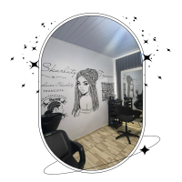

Karolaine Skarlaty
A trancista é natural de São Paulo/SP, nascida em 1996 e com 7 anos de
experiência em tranças.
A sua jornada iniciou-se em meados de 2019, com o próprio quarto sendo seu
ambiente de trabalho, e usando materiais de lã e linhas de crochê para fazer as tranças box
braids nas
suas primeiras clientes. No decorrer do ano, passou a usar jumbo e aceitar pedidos de outros
tipos de tranças.
Em 2021, Karolaine realizou um curso para aumentar seu conhecimento sobre as
tranças,
aprimorar a comunicação e atendimento com as clientes, e aperfeiçoar suas habilidades em
camuflagem, enraizada, alimentação da trança, entre outras.
Em novembro de 2021, Karolaine se mudou de casa e construiu um espaço para ser o
seu salão,
no qual, atualmente, reside na Avenida Pedro de Avós, 155 - Bairro Jardim Miriam em São
Paulo/SP.
